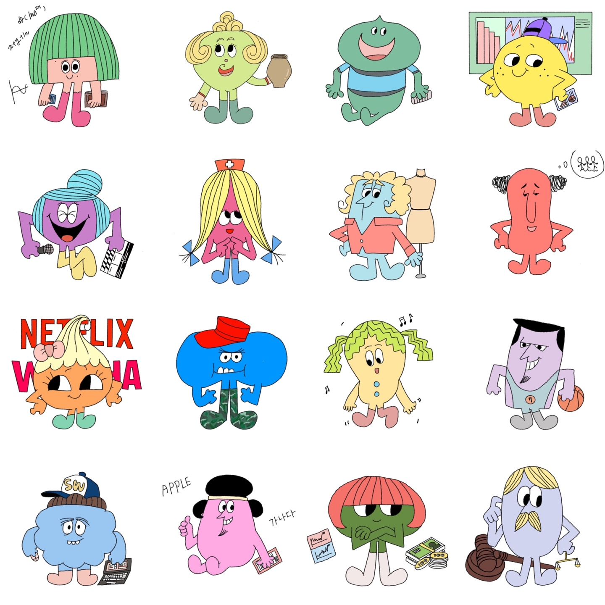

ENTJ - 법학과
- 외향적, 직관적, 사고적 및 판단적 성격특성을 가진 사람입니다.
- 그들은 추진력과 성취를 사랑하는 결단력 있는 사람들입니다. 그들은 창의적인 비전을 구성하기 위해 정보를 수집하지만 실행하기 전에 오래 주저하는 경우는 드뭅니다.
- 법학과는 학생들로 하여금 법적 사고력을 배양하고 올바른 가치관과 법률관을 형성하도록 함으로써 국가와 사회 발전에 기여할 수 있는 인재를 양성하는 학과로, 법이론과 법률실무를 적절히 조화시켜 현실에 적용할 수 있는 법률지식 함양에 중점을 두고 있습니다.